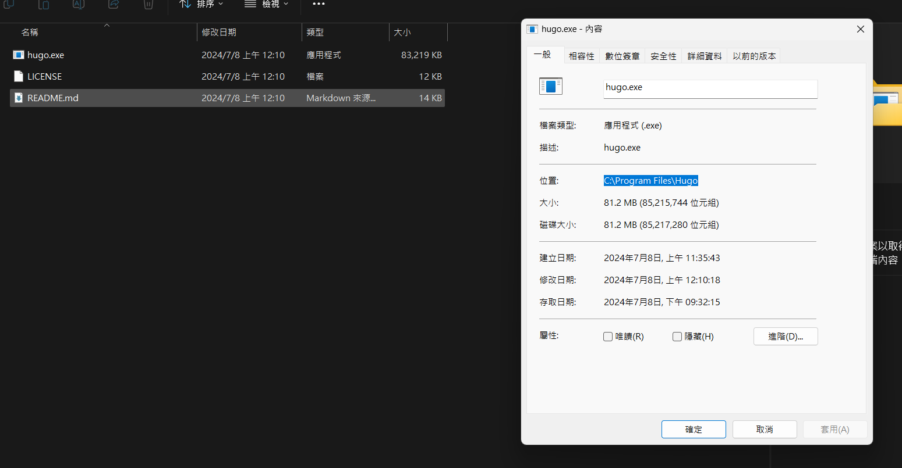
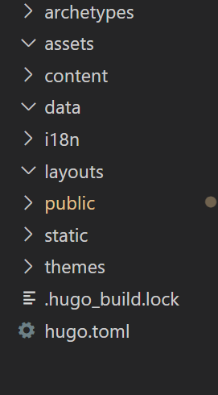
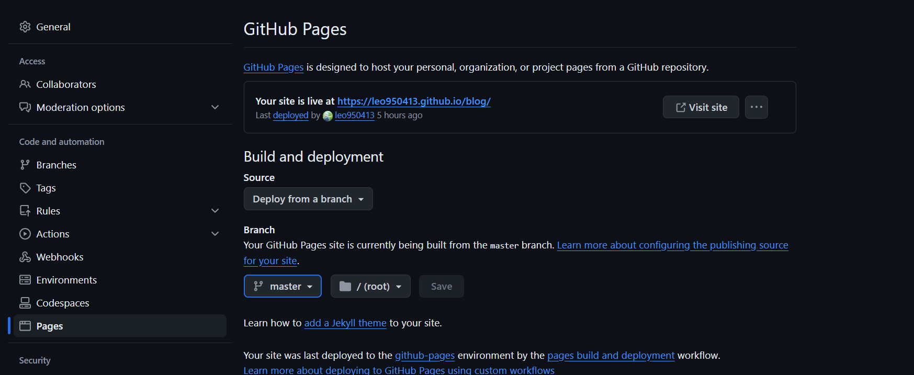

在windows上使用Hugo + Github Page架設personal blog
下載Hugo
首先先到github上下載所需的檔案，解壓縮完成後在把下載資料夾的路徑設為環境變數  重新打開windows terminal之後，測試hugo指令是否順利執行，接著打開一個新的資料夾，在資料夾中用
hugo new site
生成一些hugo的檔案，應該會長的像這樣 
下載主題
接著就可以開始挑選主題了，這個網站上可以找到很多相關的主題，用不同的標籤方便尋找想要的，像這個網站就使用typo這個主題，將想要的主題clone到/theme的資料夾裡，隨著每個主題的不同就會須要不同的參數，這部分就只能自己到github wiki上面找相關的敘述
建立第一個post
hugo new posts/my-first-post.md
使用完後可以看到/content/post裡多了一個my-first-post.md，這個檔案就是我們要編輯的markdown檔案，裡面應該會有預設的參數如下
---
title: "my-first-post"
date: "2024-07-08"
---
markdown start there ...
在---中圍起來的是各種的參數，會根據不同的theme而變得不同，在這個區塊之後就是可以寫markdown的地方了
，寫markdown的時候可以使用
hugo server
建置local server進行測試，server會自動的把修正的內容反饋到網頁上，
發佈到github page
首先在/public中使用
git init
創建一個新的repo，務必確定是在/public這個folder裡，否則使用github page時會找不到index.html，接著 用github desktop的add existing repostitory，上傳到github上  最後在github上更改可見度設定為public，把Branch改成master
https://<username>.github.io/<repo name>
到這裡就能看到自己的網站了